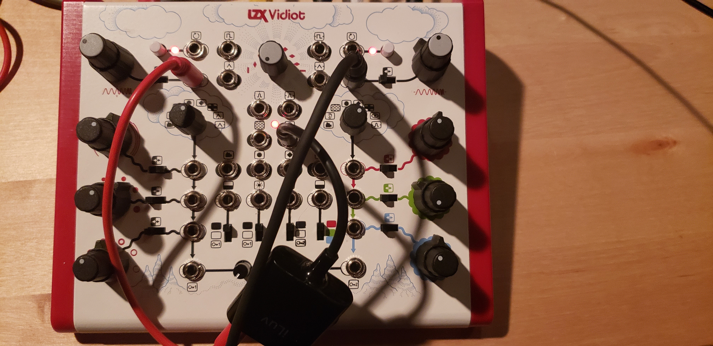
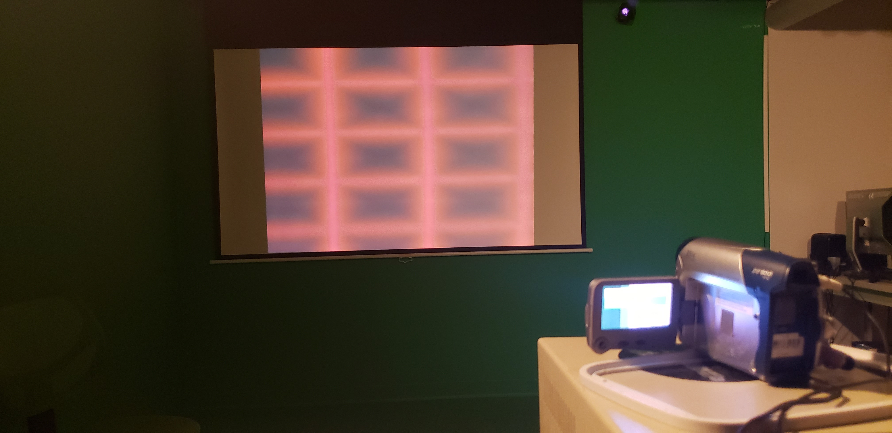

HomeWork 2
Project 2: Analog to Digital
When it came to use the video synthesizer, I was able to get a pretty good understanding on how to uses it. When using the video synthesizer this is the image that I was able to produce that I wanted to replicate. When coding it though I did run into some issues. I am still confused when using and coding in WebGL so it took some time to figure out what I could do. In the end I know that the effect that I created is not what I was expecting and does not look 100% like what I wanted to produce. It has the pattern over all but just not the color scheme, but I am fine with that. Also I kinda just stumbled upon the pattern that I was hopping to create by accident so it is hard to explain everything that I did to it. I know that I created and used the video input and added some math to the line that works with the FragCoords that allowed me to manipulate the video and stretch it into the shape and the pattern that I wanted. Also in the picture I was originally using audio to cause the image to shrink and grow based on the variable from the audio but could not get that working so I just used time and created a sin function that put it in a number range that I liked also using a mod function as well.When it came to use the video synthesizer, I was able to get a pretty good understanding on how to uses it. When using the video synthesizer this is the image that I was able to produce that I wanted to replicate. When coding it though I did run into some issues. I am still confused when using and coding in WebGL so it took some time to figure out what I could do. In the end I know that the effect that I created is not what I was expecting and does not look 100% like what I wanted to produce. It has the pattern over all but just not the color scheme, but I am fine with that. Also I kinda just stumbled upon the pattern that I was hopping to create by accident so it is hard to explain everything that I did to it. I know that I created and used the video input and added some math to the line that works with the FragCoords that allowed me to manipulate the video and stretch it into the shape and the pattern that I wanted. Also in the picture I was originally using audio to cause the image to shrink and grow based on the variable from the audio but could not get that working so I just used time and created a sin function that put it in a number range that I liked also using a mod function as well.
Once it came to someone checking out the pattern, they think that I am just lacking one more thing like using square waves or a triangle wave oscillation for the assignment or add noise to this as well. In comprising to the other assignment, they think this to be lacking and I agree to. With the zooming in though I tried to change around on it zooms in and out by trying to create a triangle wave with it so that it would have the same speed moving in and out on the pattern.
 